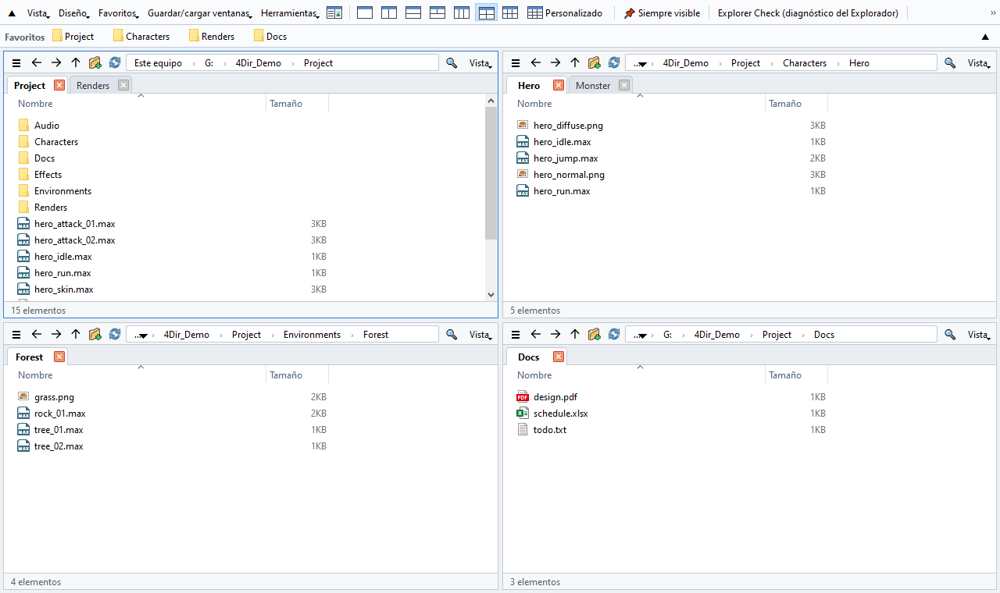
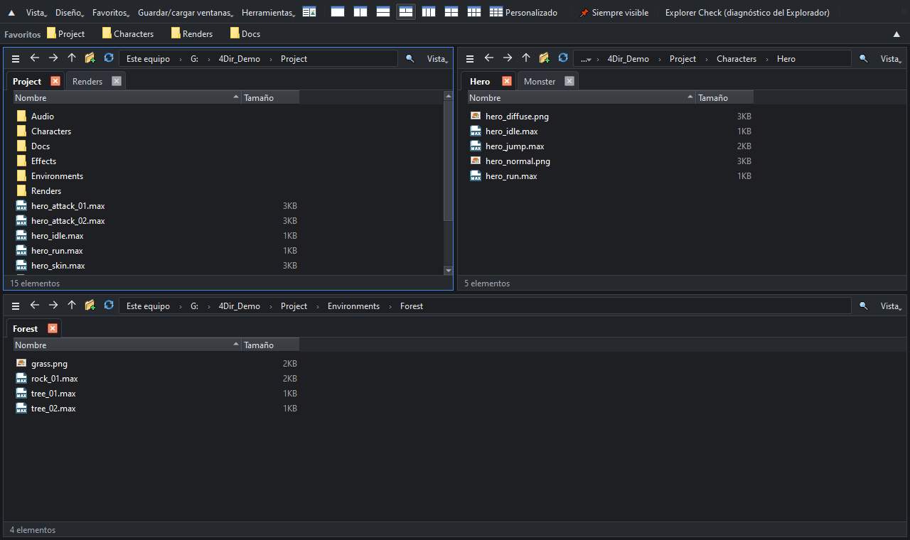

Hasta 20 paneles. Pestañas en cada panel. Ligero para tu PC.
Gestor de archivos gratuito para Windows 10/11. Sin instalación: descomprime y ejecuta.
Windows 10/11 64 bits · 33 MB · 2026-10-21 · gratis

Funciones
Hasta 20 paneles
Diseños de 1, 2, 3, 4 o 6 paneles con un clic, o cualquier cuadrícula de hasta 5 × 4. Cada panel tiene sus propias pestañas.
No te estorba
Lee las carpetas directamente, sin la pesada vista del shell de Windows. Sin temporizadores ni sondeos en reposo: puedes dejarlo abierto junto a 3ds Max, juegos u otras apps pesadas.
Búsqueda instantánea
Escribe y busca entre todos los nombres de archivo de tus unidades. Su propio índice se actualiza en tiempo real, sin permisos de administrador.
Estado SVN de un vistazo
Insignias de modificado / añadido / conflicto leídas directamente de .svn; las carpetas se vuelven rojas si algo cambió dentro. Git y Perforce mediante las superposiciones de Windows.
Se siente como el Explorador
Mismos atajos de teclado, el menú contextual completo de Windows y arrastrar y soltar con el Explorador y otras apps.
Portable y privado
La configuración se queda en la carpeta de 4Dir. Tema claro/oscuro, 10 idiomas, renombrado masivo, restauración de sesión y diagnóstico del Explorador incluidos.

Cómo instalar
- Descarga el zip con el botón de arriba (o desde Releases en GitHub). El botón verde “Code → Download ZIP” de GitHub solo contiene el código fuente y no se ejecuta.
- Clic derecho en el zip → Propiedades → marca Desbloquear → Aceptar. (Si no, Windows mostrará una advertencia de seguridad cada vez.)
- Descomprímelo donde quieras y haz doble clic en 4Dir.vbs.
Si aparece Windows SmartScreen: haz clic en Más información → Ejecutar de todas formas. 4Dir es nuevo y aún no tiene firma de código; el código fuente es público.
Verificar la descarga (opcional)
En el Símbolo del sistema ejecuta certutil -hashfile 4Dir_v0.9.55.zip SHA256; el resultado debe coincidir con:
f42b7685b997850584e639aacd754d90f8bc42130e85709c74acd1b310a41cd7
Apoya 4Dir
4Dir es gratis y sin anuncios. Si te ahorra tiempo, una pequeña donación ayuda a que sigan llegando actualizaciones.
Preguntas frecuentes
¿De verdad es gratis?
Sí. 4Dir es gratuito y de código abierto (GPL-3.0). Sin anuncios, sin cuenta, sin periodo de prueba.
¿Envía datos?
Ningún dato personal. Solo comprueba una vez al día si hay una versión nueva (se puede desactivar en Herramientas).
¿Algo salió mal?
Herramientas → Guardar registro para informe de problemas, y abre un issue en GitHub con el archivo zip.